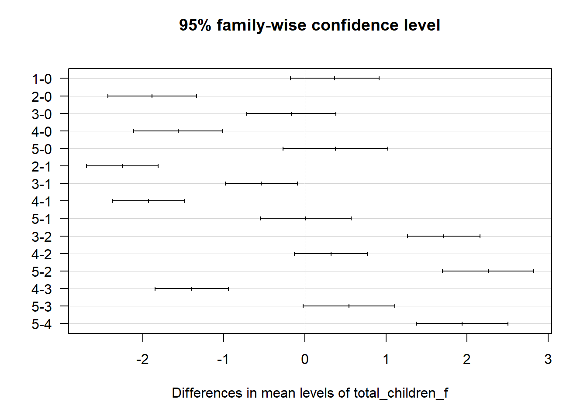

Capitulo 2 Pruebas de hipótesis paramétricas y no paramétricas
Este capítulo reúne un conjunto de pruebas de hipótesis para comparar grupos, todas aplicadas sobre el mismo dataset de campañas de mercadeo, en función del perfil del hogar (total_children, num_children_at_home, avg_cars_at home(approx).1) y su relación con cost, unit_sales y store_sales. Se cubren tanto los métodos paramétricos (prueba t para muestras independientes con varianzas iguales o distintas, y ANOVA de un factor con su respectiva prueba post-hoc) como sus alternativas no paramétricas (Wilcoxon-Mann-Whitney y Wilcoxon pareado), usadas cuando no se cumple el supuesto de normalidad. En cada caso se revisan primero los supuestos (normalidad y homogeneidad de varianzas cuando aplica) directamente con las funciones de R correspondientes, antes de decidir qué prueba usar, y se calcula el tamaño del efecto para complementar la significancia estadística. Se cierra el capítulo con una prueba de independencia chi-cuadrado, para el caso de dos variables categóricas.
Con 360 mil filas, shapiro.test() no puede usarse directamente (tiene un límite de 5000 datos), así que la normalidad se evalúa con Kolmogorov-Smirnov (y Lilliefors en la sección donde se comparan varias pruebas).
2.3 Comparación de dos medias independientes: costo según disponibilidad de auto
2.3.2 Resumen exploratorio
df_autos %>%
group_by(tiene_auto) %>%
summarise(n = length(cost), prom = round(mean(cost), 2), ds = round(sd(cost), 2),
mediana = median(cost), RIC = IQR(cost), min = min(cost), max = max(cost)) %>%
kbl(col.names = c("Grupo", "n", "Promedio", "DE", "Mediana", "RIC", "Mín", "Máx"),
caption = "Resumen de cost según disponibilidad de auto") %>%
kable_styling(bootstrap_options = c("striped", "hover", "condensed"), font_size = 12)| Grupo | n | Promedio | DE | Mediana | RIC | Mín | Máx |
|---|---|---|---|---|---|---|---|
| Con auto | 341799 | 99.81 | 29.91 | 98.81 | 55.11 | 50.79 | 149.75 |
| Sin auto | 18537 | 96.08 | 30.30 | 95.21 | 53.53 | 50.79 | 149.75 |
La variable cost fue analizada según la disponibilidad de vehículo en el hogar, encontrando un marcado desbalance en el tamaño de los grupos: el grupo “Con auto” concentra 341.799 observaciones (94,9%), mientras que “Sin auto” corresponde apenas a 18.537 (5,1%). En cuanto al costo, el grupo “Con auto” presenta un promedio de 99,81 (DS = 29,91), levemente superior al de “Sin auto” con 96,08 (DS = 30,30), diferencia que se mantiene en la mediana (98,81 frente a 95,21).
Las desviaciones estándar son muy similares entre ambos grupos, lo que constituye un primer indicio a favor del supuesto de homogeneidad de varianzas necesario para la prueba t con varianzas iguales. Por otra parte, en los dos grupos la media es un poco mayor que la mediana, lo que sugiere una leve asimetría positiva en la distribución del costo. El mínimo (50,79) y el máximo (149,75) coinciden exactamente en ambos grupos, por lo que la diferencia observada parece explicarse más por la tendencia central que por la presencia de valores extremos.
2.3.3 Supuesto de normalidad
## Warning in ks.test.default(scale(sin_auto), "pnorm"): ties should not be present for the one-sample Kolmogorov-Smirnov test##
## Asymptotic one-sample Kolmogorov-Smirnov test
##
## data: scale(sin_auto)
## D = 0.12031, p-value < 2.2e-16
## alternative hypothesis: two-sided## Warning in ks.test.default(scale(con_auto), "pnorm"): ties should not be present for the one-sample Kolmogorov-Smirnov test##
## Asymptotic one-sample Kolmogorov-Smirnov test
##
## data: scale(con_auto)
## D = 0.089175, p-value < 2.2e-16
## alternative hypothesis: two-sidedSe aplicó la prueba de Kolmogorov-Smirnov para evaluar el supuesto de normalidad en ambos grupos, dado que con 341.799 y 18.537 observaciones no es posible usar shapiro.test(). En el grupo “Sin auto” se obtuvo D = 0,12031 con p-valor < 2,2e-16, y en “Con auto” D = 0,089175 con p-valor < 2,2e-16. En ambos casos el p-valor es mucho menor que 0,05, por lo que se rechaza la hipótesis nula de normalidad: ni “Sin auto” ni “Con auto” siguen una distribución normal.
Esto era de esperarse dado el tamaño de muestra tan grande, ya que con miles de datos hasta desviaciones mínimas de la normal terminan siendo estadísticamente significativas.
2.3.4 Supuesto de homocedasticidad
##
## F test to compare two variances
##
## data: sin_auto and con_auto
## F = 1.0263, num df = 18536, denom df = 341798, p-value = 0.01446
## alternative hypothesis: true ratio of variances is not equal to 1
## 95 percent confidence interval:
## 1.005156 1.048071
## sample estimates:
## ratio of variances
## 1.026287Se aplicó la prueba F (var.test()) para comparar las varianzas de cost entre los grupos “Sin auto” y “Con auto”, obteniendo F = 1,0263 (num df = 18536, denom df = 341798) con un p-valor = 0,01446. Como el p-valor es menor que 0,05, se rechaza la hipótesis nula de igualdad de varianzas, concluyendo que las varianzas de los dos grupos son estadísticamente distintas (razón de varianzas = 1,026287, IC 95% entre 1,005156 y 1,048071).
Aunque la diferencia es estadísticamente significativa, la razón de varianzas es muy cercana a 1, lo que indica que en términos prácticos la diferencia es mínima; sin embargo, dado el tamaño de muestra tan grande, incluso diferencias pequeñas terminan siendo detectadas. Dado que las varianzas resultaron distintas, corresponde usar la prueba t con la corrección de Welch (var.equal = FALSE).
2.3.5 Prueba t
##
## Welch Two Sample t-test
##
## data: sin_auto and con_auto
## t = -16.312, df = 20544, p-value < 2.2e-16
## alternative hypothesis: true difference in means is not equal to 0
## 95 percent confidence interval:
## -4.172328 -3.277196
## sample estimates:
## mean of x mean of y
## 96.08158 99.80634La prueba con var.equal = FALSE (Welch) obtiene t = -16,312 con df = 20544 (ajustados por la diferencia de varianzas) y un p-valor < 2,2e-16, por lo que se rechaza la hipótesis nula de igualdad de medias: existe una diferencia estadísticamente significativa entre las medias de “Sin auto” (96,08) y “Con auto” (99,80). El IC 95% para la diferencia va de -4,17 a -3,28.
2.3.6 Tamaño del efecto
##
## Cohen's d
##
## d estimate: -0.1244567 (negligible)
## 95 percent confidence interval:
## lower upper
## -0.1392403 -0.1096731El tamaño del efecto (Cohen’s d) para la diferencia de costo entre “Sin auto” y “Con auto” fue d = -0,1245 (IC 95%: -0,1392 a -0,1097), lo que según los criterios convencionales de Cohen se clasifica como un efecto pequeño, casi negligible (valores por debajo de 0,2 se consideran de magnitud trivial).
Esto confirma lo que ya se venía sospechando desde el resumen exploratorio inicial: aunque la prueba t arrojó un p-valor extremadamente pequeño (< 2,2e-16), esa significancia estadística es en gran parte producto del tamaño de muestra tan grande (más de 360 mil observaciones), donde incluso diferencias mínimas terminan siendo “significativas”. En términos prácticos, la diferencia de costo entre tener o no auto es muy pequeña y probablemente no tenga mayor relevancia para la toma de decisiones.
2.4 Comparación de dos medias independientes (varianzas distintas, Welch): ventas según hijos en casa
2.4.1 Preparación de datos
df_hijoscasa <- data %>%
mutate(hijos_casa_grp = factor(ifelse(num_children_at_home == 0,
"Sin hijos en casa", "Con hijos en casa")))
sin_hijos <- df_hijoscasa %>% filter(hijos_casa_grp == "Sin hijos en casa") %>% pull(`unit_sales(in millions)`)
con_hijos <- df_hijoscasa %>% filter(hijos_casa_grp == "Con hijos en casa") %>% pull(`unit_sales(in millions)`)2.4.2 Resumen exploratorio
df_hijoscasa %>%
group_by(hijos_casa_grp) %>%
summarise(n = length(`unit_sales(in millions)`),
prom = round(mean(`unit_sales(in millions)`), 3),
ds = round(sd(`unit_sales(in millions)`), 3),
mediana = median(`unit_sales(in millions)`),
RIC = IQR(`unit_sales(in millions)`)) %>%
kbl(col.names = c("Grupo", "n", "Promedio", "DE", "Mediana", "RIC"),
caption = "Resumen de unit_sales según hijos en casa") %>%
kable_styling(bootstrap_options = c("striped", "hover", "condensed"), font_size = 12)| Grupo | n | Promedio | DE | Mediana | RIC |
|---|---|---|---|---|---|
| Con hijos en casa | 116781 | 3.067 | 0.793 | 3 | 1 |
| Sin hijos en casa | 243555 | 3.033 | 0.781 | 3 | 1 |
Se caracterizaron las ventas (unit_sales) según si el hogar tiene o no hijos en casa. El grupo “Sin hijos en casa” es el más numeroso, con 243.555 observaciones (67,6%), frente a 116.781 (32,4%) del grupo “Con hijos en casa”. En cuanto a las ventas, el grupo “Con hijos en casa” presenta un promedio levemente superior (3,067) frente a “Sin hijos en casa” (3,033), aunque la mediana es idéntica en ambos grupos (3), lo que sugiere que la diferencia entre medias es mínima.
Las desviaciones estándar son similares (0,793 y 0,781), aunque no idénticas, y el rango intercuartílico es el mismo (RIC = 1) en los dos grupos. Esto anticipa que correspondería usar varianzas distintas (Welch), lo cual se confirma con la prueba F a continuación.
2.4.3 Supuesto de normalidad
## Warning in ks.test.default(scale(sin_hijos), "pnorm"): ties should not be present for the one-sample Kolmogorov-Smirnov test##
## Asymptotic one-sample Kolmogorov-Smirnov test
##
## data: scale(sin_hijos)
## D = 0.24488, p-value < 2.2e-16
## alternative hypothesis: two-sided## Warning in ks.test.default(scale(con_hijos), "pnorm"): ties should not be present for the one-sample Kolmogorov-Smirnov test##
## Asymptotic one-sample Kolmogorov-Smirnov test
##
## data: scale(con_hijos)
## D = 0.24505, p-value < 2.2e-16
## alternative hypothesis: two-sidedSe aplicó la prueba de Kolmogorov-Smirnov para evaluar normalidad, dado el gran tamaño de muestra de ambos grupos. En “Sin hijos en casa” se obtuvo D = 0,24488 con p-valor < 2,2e-16, y en “Con hijos en casa” D = 0,24505 con p-valor < 2,2e-16. En los dos casos el p-valor es mucho menor que 0,05, por lo que se rechaza la hipótesis nula de normalidad: ni “Sin hijos en casa” ni “Con hijos en casa” siguen una distribución normal.
Este resultado es coherente con la naturaleza discreta de unit_sales, que toma pocos valores distintos, lo cual hace que la distribución se aleje bastante de una normal continua.
2.4.4 Supuesto de homocedasticidad
##
## F test to compare two variances
##
## data: sin_hijos and con_hijos
## F = 0.96993, num df = 243554, denom df = 116780, p-value = 1.228e-09
## alternative hypothesis: true ratio of variances is not equal to 1
## 95 percent confidence interval:
## 0.9604007 0.9795393
## sample estimates:
## ratio of variances
## 0.9699312Se aplicó la prueba F para comparar las varianzas de las ventas entre “Sin hijos en casa” y “Con hijos en casa”, obteniendo F = 0,96993 (num df = 243554, denom df = 116780) con un p-valor = 1,228e-09. Como el p-valor es menor que 0,05, se rechaza la hipótesis nula de igualdad de varianzas, concluyendo que las varianzas de los dos grupos son estadísticamente distintas (razón de varianzas = 0,9699312, IC 95% entre 0,9604007 y 0,9795393). Este resultado justifica usar la corrección de Welch (var.equal = FALSE) en la prueba t.
2.4.5 Prueba t de Welch
##
## Welch Two Sample t-test
##
## data: sin_hijos and con_hijos
## t = -12.349, df = 227107, p-value < 2.2e-16
## alternative hypothesis: true difference in means is not equal to 0
## 95 percent confidence interval:
## -0.04017080 -0.02916606
## sample estimates:
## mean of x mean of y
## 3.032646 3.067314Se aplicó la prueba t de Welch (var.equal = FALSE) para comparar las ventas entre “Sin hijos en casa” y “Con hijos en casa”, obteniendo t = -12,349 (df = 227107) con un p-valor < 2,2e-16. Como el p-valor es menor que 0,05, se rechaza la hipótesis nula de igualdad de medias: existe una diferencia estadísticamente significativa entre los dos grupos. La media de “Sin hijos en casa” es 3,033 y la de “Con hijos en casa” es 3,067, con un IC 95% para la diferencia entre -0,0402 y -0,0292.
2.4.6 Tamaño del efecto
##
## Cohen's d
##
## d estimate: -0.04419123 (negligible)
## 95 percent confidence interval:
## lower upper
## -0.05116817 -0.03721429El tamaño del efecto (Cohen’s d) para la diferencia de ventas entre “Sin hijos en casa” y “Con hijos en casa” fue d = -0,04419123 (IC 95%: -0,05117 a -0,03721), lo que según los criterios de Cohen se clasifica como un efecto negligible, muy por debajo del umbral de 0,2 que se considera un efecto pequeño.
Esto confirma que, aunque la prueba t de Welch arrojó un p-valor extremadamente pequeño (< 2,2e-16), esa significancia estadística es producto casi exclusivamente del tamaño de muestra tan grande, y no de una diferencia real relevante entre los grupos. En términos prácticos, tener o no hijos en casa prácticamente no afecta el volumen de ventas.
2.5 Comparación no paramétrica de dos grupos independientes: ventas de tienda según cantidad de hijos totales
2.5.1 Datos
Comparamos los dos extremos de total_children (pocos hijos vs. muchos hijos), dejando fuera los valores intermedios (2-3) para que la comparación sea más clara.
2.5.2 Resumen exploratorio
df_nopar %>%
group_by(grupo_hijos) %>%
summarise(n = length(`store_sales(in millions)`),
prom = round(mean(`store_sales(in millions)`), 3),
mediana = median(`store_sales(in millions)`),
RIC = round(IQR(`store_sales(in millions)`), 2)) %>%
kbl(col.names = c("Grupo", "n", "Promedio", "Mediana", "RIC"),
caption = "Resumen de store_sales según cantidad de hijos totales") %>%
kable_styling(bootstrap_options = c("striped", "hover", "condensed"), font_size = 12)| Grupo | n | Promedio | Mediana | RIC |
|---|---|---|---|---|
| Muchos hijos (4-5) | 103612 | 6.677 | 6.28 | 4.94 |
| Pocos hijos (0-1) | 111298 | 6.112 | 5.61 | 4.38 |
Se compararon los dos extremos de total_children, dejando fuera los valores intermedios (2-3) para hacer más clara la comparación. El grupo “Pocos hijos (0-1)” es levemente más numeroso, con 111.298 observaciones, frente a 103.612 de “Muchos hijos (4-5)”. En cuanto a store_sales, el grupo “Muchos hijos (4-5)” presenta un promedio superior (6,677) frente a “Pocos hijos (0-1)” (6,112), diferencia que se mantiene en la mediana (6,28 frente a 5,61). El rango intercuartílico es algo mayor en “Muchos hijos” (4,94) que en “Pocos hijos” (4,38), lo que sugiere una dispersión levemente mayor de las ventas en ese grupo.
2.5.3 Supuesto de normalidad (comparando KS y Lilliefors)
df_nopar %>%
group_by(grupo_hijos) %>%
summarise(n = length(`store_sales(in millions)`),
est_ks = ks.test(scale(`store_sales(in millions)`), "pnorm")$statistic,
p_ks = ks.test(scale(`store_sales(in millions)`), "pnorm")$p.value,
est_l = lillie.test(`store_sales(in millions)`)$statistic,
p_l = lillie.test(`store_sales(in millions)`)$p.value) %>%
kbl(col.names = c("Grupo", "n", "Estadístico KS", "p-valor KS", "Estadístico Lilliefors", "p-valor Lilliefors"),
caption = "Comparación de pruebas de normalidad (KS vs. Lilliefors)", digits = 5) %>%
kable_styling(bootstrap_options = c("striped", "hover", "condensed"), font_size = 12)## Warning: There were 4 warnings in `summarise()`.
## The first warning was:
## ℹ In argument: `est_ks = ks.test(scale(`store_sales(in millions)`), "pnorm")$statistic`.
## ℹ In group 1: `grupo_hijos = Muchos hijos (4-5)`.
## Caused by warning in `ks.test.default()`:
## ! ties should not be present for the one-sample Kolmogorov-Smirnov test
## ℹ Run `dplyr::last_dplyr_warnings()` to see the 3 remaining warnings.| Grupo | n | Estadístico KS | p-valor KS | Estadístico Lilliefors | p-valor Lilliefors |
|---|---|---|---|---|---|
| Muchos hijos (4-5) | 103612 | 0.06795 | 0 | 0.06795 | 0 |
| Pocos hijos (0-1) | 111298 | 0.06961 | 0 | 0.06961 | 0 |
# no se incluye shapiro.test() porque tiene un límite de 5000 datos y cada grupo tiene miles de filasSe compararon dos pruebas de normalidad para store_sales en ambos grupos: Kolmogorov-Smirnov (KS) y Lilliefors. En “Muchos hijos (4-5)” se obtuvo D = 0,06795 y en “Pocos hijos (0-1)” D = 0,06961, con p-valor prácticamente 0 en ambos casos y en ambas pruebas. KS y Lilliefors coinciden completamente en su conclusión: se rechaza la hipótesis nula de normalidad para los dos grupos.
2.5.4 Supuesto de homogeneidad de varianzas
## Levene's Test for Homogeneity of Variance (center = median)
## Df F value Pr(>F)
## group 1 1107.4 < 2.2e-16 ***
## 214908
## ---
## Signif. codes: 0 '***' 0.001 '**' 0.01 '*' 0.05 '.' 0.1 ' ' 1Se aplicó la prueba de Levene (centrada en la mediana, más robusta cuando no hay normalidad) para evaluar homogeneidad de varianzas de store_sales entre “Pocos hijos (0-1)” y “Muchos hijos (4-5)”. El resultado fue F = 1107,4 (df = 1, 214908) con un p-valor < 2,2e-16, por lo que se rechaza la hipótesis nula de igualdad de varianzas: existe evidencia fuerte de que las varianzas de los dos grupos son distintas.
2.5.5 Prueba de Wilcoxon (Mann-Whitney)
##
## Wilcoxon rank sum test with continuity correction
##
## data: store_sales(in millions) by grupo_hijos
## W = 6245335679, p-value < 2.2e-16
## alternative hypothesis: true location shift is not equal to 0Se aplicó la prueba de Wilcoxon-Mann-Whitney para comparar store_sales entre “Pocos hijos (0-1)” y “Muchos hijos (4-5)”, dado que ninguno de los dos grupos cumplió el supuesto de normalidad (confirmado con KS y Lilliefors) ni el de homogeneidad de varianzas (Levene). El resultado fue W = 6.245.335.679 con un p-valor < 2,2e-16, por lo que se rechaza la hipótesis nula de que no hay diferencia de localización entre los dos grupos.
2.5.6 Tamaño del efecto
df_nopar %>%
wilcox_effsize(`store_sales(in millions)` ~ grupo_hijos) %>%
kbl(caption = "Tamaño del efecto (r de Wilcoxon): store_sales según grupo de hijos") %>%
kable_styling(bootstrap_options = c("striped", "hover", "condensed"), font_size = 12)| .y. | group1 | group2 | effsize | n1 | n2 | magnitude |
|---|---|---|---|---|---|---|
| store_sales(in millions) | Muchos hijos (4-5) | Pocos hijos (0-1) | 0.0719635 | 103612 | 111298 | small |
El tamaño del efecto no paramétrico (r de Wilcoxon) para la diferencia de ventas entre “Muchos hijos (4-5)” (n = 103.612) y “Pocos hijos (0-1)” (n = 111.298) fue r = 0,07196347, clasificado por la función como magnitud “small” (pequeña). Aunque la prueba de Wilcoxon detectó una diferencia estadísticamente muy significativa (p < 2,2e-16), el tamaño real de esa diferencia es pequeño.
2.6 Comparación no paramétrica pareada: hijos totales vs. hijos en casa
A diferencia de las secciones anteriores, aquí las dos “muestras” no son grupos distintos de hogares, sino dos mediciones tomadas sobre el mismo hogar: cuántos hijos tiene en total (total_children) y cuántos de esos viven en casa (num_children_at_home). Por estar medidas sobre la misma unidad, se comparan como muestras pareadas, usando directamente la alternativa no paramétrica (Wilcoxon pareado).
2.6.2 Resumen exploratorio
data.frame(variable = c("total_children", "num_children_at_home"),
media = round(c(mean(total_h), mean(casa_h)), 3),
sd = round(c(sd(total_h), sd(casa_h)), 3),
mediana = c(median(total_h), median(casa_h))) %>%
kbl(col.names = c("Variable", "Media", "DE", "Mediana"),
caption = "Hijos totales vs. hijos en casa, por hogar") %>%
kable_styling(bootstrap_options = c("striped", "hover", "condensed"), font_size = 12)| Variable | Media | DE | Mediana |
|---|---|---|---|
| total_children | 2.456 | 1.489 | 2 |
| num_children_at_home | 0.689 | 1.215 | 0 |
En promedio, cada hogar tiene 2,4564823 hijos en total (total_children, DS = 1,488992), de los cuales solo 0,6893899 viven en casa (num_children_at_home, DS = 1,214732). Esto da una diferencia promedio de aproximadamente 1,767 hijos por hogar que, en promedio, no residen en el hogar registrado. La mediana refuerza esta lectura: mientras el hogar típico tiene 2 hijos en total, la mediana de hijos en casa es 0, es decir, más de la mitad de los hogares no tiene ningún hijo viviendo con ellos actualmente.
2.6.3 Supuesto de normalidad
## Warning in ks.test.default(scale(total_h), "pnorm"): ties should not be present for the one-sample Kolmogorov-Smirnov test##
## Asymptotic one-sample Kolmogorov-Smirnov test
##
## data: scale(total_h)
## D = 0.14488, p-value < 2.2e-16
## alternative hypothesis: two-sided## Warning in ks.test.default(scale(casa_h), "pnorm"): ties should not be present for the one-sample Kolmogorov-Smirnov test##
## Asymptotic one-sample Kolmogorov-Smirnov test
##
## data: scale(casa_h)
## D = 0.39073, p-value < 2.2e-16
## alternative hypothesis: two-sidedSe aplicó la prueba de Kolmogorov-Smirnov para evaluar normalidad en ambas variables. Para total_children se obtuvo D = 0,14488 con p-valor < 2,2e-16, y para num_children_at_home D = 0,39073 con p-valor < 2,2e-16. En ambos casos se rechaza la hipótesis nula de normalidad, siendo el alejamiento mucho más marcado en num_children_at_home. Este resultado era esperable: ambas son variables de conteo con solo 6 valores posibles (0 a 5), por lo que su distribución es discreta y no puede aproximarse a una normal continua, sin importar el tamaño de la muestra. Al no cumplirse normalidad, la comparación entre total_children y num_children_at_home se aborda directamente con la prueba no paramétrica para muestras pareadas (Wilcoxon pareado), sin pasar por la t pareada.
2.6.4 Prueba de Wilcoxon pareada
##
## Wilcoxon signed rank test with continuity correction
##
## data: total_h and casa_h
## V = 3.3996e+10, p-value < 2.2e-16
## alternative hypothesis: true location shift is not equal to 0Se aplicó la prueba de Wilcoxon pareada (Wilcoxon signed-rank test) entre total_children y num_children_at_home, obteniendo V = 3,3996e+10 con un p-valor < 2,2e-16, por lo que se rechaza la hipótesis nula de que no hay diferencia de localización entre las dos mediciones: existe una diferencia significativa entre el número total de hijos y el número de hijos que viven en casa. Esto tiene sentido dado que, por definición, num_children_at_home es un subconjunto de total_children (no puede haber más hijos en casa que hijos totales), y la diferencia observada en el resumen exploratorio (≈1,77 hijos) es considerable frente a una media de apenas 2,46 hijos totales.
2.6.5 Tamaño del efecto
data_larga_hogar <- data.frame(
hogar_id = rep(1:length(total_h), 2),
variable = rep(c("total_children", "num_children_at_home"), each = length(total_h)),
valor = c(total_h, casa_h)
)
data_larga_hogar %>%
wilcox_effsize(valor ~ variable, paired = TRUE) %>%
kbl(caption = "Tamaño del efecto (r de Wilcoxon): comparación pareada total_children vs. num_children_at_home") %>%
kable_styling(bootstrap_options = c("striped", "hover", "condensed"), font_size = 12)| .y. | group1 | group2 | effsize | n1 | n2 | magnitude |
|---|---|---|---|---|---|---|
| valor | num_children_at_home | total_children | 0.8107739 | 360336 | 360336 | large |
El tamaño del efecto no paramétrico (r de Wilcoxon) para la diferencia pareada entre total_children y num_children_at_home fue r = 0,8107739 (n1 = n2 = 360.336), clasificado por la función como magnitud “large” (grande). A diferencia de las comparaciones anteriores (auto, hijos en casa, grupo de hijos), donde la significancia estadística no se traducía en una diferencia relevante en la práctica, aquí sí hay una diferencia sustancial y consistente entre el número total de hijos y el número de hijos que viven en casa — un hallazgo relevante sobre la estructura familiar de los hogares en este dataset, aunque en parte explicado por la relación de subconjunto entre ambas variables.
2.7 ANOVA de un factor: costo según número de hijos totales
Se evalúa si el costo promedio de la campaña difiere entre los 6 niveles de total_children (0 a 5), usando directamente aov(), y se complementa con una prueba post-hoc para identificar entre qué grupos específicos está la diferencia.
2.7.1 Tamaños de muestra y promedios por grupo
df_hogar <- data %>% mutate(total_children_f = factor(total_children))
resumen_grupos <- df_hogar %>%
group_by(total_children_f) %>%
summarise(n = length(cost), media = round(mean(cost), 2))
resumen_grupos %>%
kbl(col.names = c("total_children", "n", "Media de cost"),
caption = "Tamaño y promedio de cost por grupo de total_children") %>%
kable_styling(bootstrap_options = c("striped", "hover", "condensed"), font_size = 12)| total_children | n | Media de cost |
|---|---|---|
| 0 | 36441 | 100.23 |
| 1 | 74857 | 100.60 |
| 2 | 73902 | 98.34 |
| 3 | 71524 | 100.06 |
| 4 | 70134 | 98.66 |
| 5 | 33478 | 100.60 |
Se resumió cost según los 6 niveles de total_children_f (0 a 5 hijos). Los tamaños de grupo son bastante grandes y varían entre 33.478 (grupo 5) y 74.857 (grupo 1), sin un desbalance tan extremo como en las comparaciones de dos grupos vistas antes. A simple vista, las medias de los 6 grupos se ven muy parecidas entre sí, oscilando en un rango estrecho entre 98,34 (grupo 2) y 100,60 (grupo 5), es decir, una diferencia máxima de apenas 2,26 unidades entre el grupo con menor y mayor promedio, sin un patrón creciente o decreciente asociado al número de hijos.
2.7.2 Prueba ANOVA (aov())
## Df Sum Sq Mean Sq F value Pr(>F)
## total_children_f 5 315432 63086 70.45 <2e-16 ***
## Residuals 360330 322677959 896
## ---
## Signif. codes: 0 '***' 0.001 '**' 0.01 '*' 0.05 '.' 0.1 ' ' 1El resultado fue F = 70,45 (df1 = 5, df2 = 360.330) con un p-valor < 2e-16, por lo que se rechaza la hipótesis nula de igualdad de medias: existe una diferencia estadísticamente significativa en cost entre al menos dos de los grupos de total_children. Sin embargo, tal como se anticipó en el resumen por grupo, las medias eran muy parecidas entre sí (rango de apenas 2,26 unidades), por lo que esta significancia probablemente refleje más el enorme tamaño de muestra que una diferencia realmente relevante en la práctica; esto se confirma más abajo con el tamaño del efecto.
2.7.3 Prueba post-hoc (Tukey HSD)
Dado que el ANOVA detectó una diferencia significativa entre los 6 grupos, se aplica la prueba post-hoc de Tukey (HSD) para identificar específicamente entre qué pares de grupos está esa diferencia.
tukey_resultado <- TukeyHSD(modelo_aov)
as.data.frame(tukey_resultado$total_children_f) %>%
rownames_to_column("Comparación") %>%
mutate(across(where(is.numeric), ~round(.x, 4))) %>%
kbl(col.names = c("Comparación", "Diferencia", "Límite inf. 95%", "Límite sup. 95%", "p ajustado"),
caption = "Tukey HSD: comparaciones por pares de total_children") %>%
kable_styling(bootstrap_options = c("striped", "hover", "condensed"), font_size = 12)| Comparación | Diferencia | Límite inf. 95% | Límite sup. 95% | p ajustado |
|---|---|---|---|---|
| 1-0 | 0.3690 | -0.1757 | 0.9137 | 0.3834 |
| 2-0 | -1.8839 | -2.4298 | -1.3381 | 0.0000 |
| 3-0 | -0.1680 | -0.7169 | 0.3808 | 0.9531 |
| 4-0 | -1.5622 | -2.1128 | -1.0115 | 0.0000 |
| 5-0 | 0.3774 | -0.2682 | 1.0230 | 0.5546 |
| 2-1 | -2.2529 | -2.6951 | -1.8107 | 0.0000 |
| 3-1 | -0.5370 | -0.9829 | -0.0911 | 0.0079 |
| 4-1 | -1.9312 | -2.3793 | -1.4830 | 0.0000 |
| 5-1 | 0.0084 | -0.5523 | 0.5691 | 1.0000 |
| 3-2 | 1.7159 | 1.2686 | 2.1632 | 0.0000 |
| 4-2 | 0.3218 | -0.1278 | 0.7713 | 0.3197 |
| 5-2 | 2.2613 | 1.6995 | 2.8231 | 0.0000 |
| 4-3 | -1.3941 | -1.8473 | -0.9409 | 0.0000 |
| 5-3 | 0.5454 | -0.0193 | 1.1101 | 0.0654 |
| 5-4 | 1.9395 | 1.3730 | 2.5060 | 0.0000 |

📝 Al knittear, revisa en la tabla de TukeyHSD() cuáles comparaciones de pares (por ejemplo, “1-0”, “5-0”, etc.) tienen un p-valor ajustado (columna p adj) menor a 0,05 — esas son las parejas de grupos cuya diferencia de medias sí es estadísticamente significativa. Dado que las medias de grupo eran muy cercanas entre sí (98,3 a 100,6), es probable que solo algunas pocas comparaciones salgan significativas, y que las diferencias de medias (columna diff) sean pequeñas incluso en esas parejas — complementa esto con el tamaño del efecto general de la siguiente sección antes de concluir si total_children es relevante para explicar cost.
2.7.4 Tamaño del efecto (eta cuadrado)
df_hogar %>%
anova_test(cost ~ total_children_f) %>%
kbl(caption = "Tamaño del efecto del ANOVA (eta cuadrado generalizado)") %>%
kable_styling(bootstrap_options = c("striped", "hover", "condensed"), font_size = 12)| Effect | DFn | DFd | F | p | p<.05 | ges |
|---|---|---|---|---|---|---|
| total_children_f | 5 | 360330 | 70.448 | 0 |
|
0.000977 |
El tamaño del efecto (eta cuadrado generalizado, ges) para el ANOVA de cost según total_children_f fue de 0,000977, es decir, apenas un 0,098% de la variabilidad en el costo se explica por el número de hijos totales. Según los criterios convencionales para eta cuadrado (0,01 pequeño, 0,06 mediano, 0,14 grande), este valor está muy por debajo incluso del umbral de efecto pequeño, por lo que se clasifica como negligible. Esto confirma que, aunque la prueba F detectó una diferencia estadísticamente muy significativa (y es probable que Tukey marque como significativas algunas parejas puntuales), esa significancia es producto casi por completo del enorme tamaño de muestra, y no de una relación real relevante entre total_children y cost.
2.8 Prueba de independencia (chi-cuadrado): tamaño de la familia vs. preferencia por producto bajo en grasa
A diferencia de las secciones anteriores, aquí las dos variables son categóricas, así que la pregunta no es “¿difieren las medias?” sino “¿están asociadas las dos variables, o son independientes?”. Cruzamos el tamaño de la familia (total_children, agrupado en tres niveles) con si el producto es bajo en grasa (low_fat).
2.8.1 Tabla de contingencia
df_chi <- data %>%
mutate(
grupo_hijos_chi = case_when(
total_children <= 1 ~ "Pocos (0-1)",
total_children <= 3 ~ "Medio (2-3)",
TRUE ~ "Muchos (4-5)"
),
low_fat_f = factor(low_fat, labels = c("No", "Sí"))
)
observados <- table(df_chi$grupo_hijos_chi, df_chi$low_fat_f)
observados %>%
as.data.frame.matrix() %>%
rownames_to_column("Tamaño de familia") %>%
kbl(caption = "Tabla de contingencia: tamaño de familia vs. low_fat") %>%
kable_styling(bootstrap_options = c("striped", "hover", "condensed"), font_size = 12)| Tamaño de familia | No | Sí |
|---|---|---|
| Medio (2-3) | 97613 | 47813 |
| Muchos (4-5) | 69806 | 33806 |
| Pocos (0-1) | 74800 | 36498 |
La tabla de contingencia cruza el grupo de tamaño de familia (grupo_hijos_chi) con si el producto es bajo en grasa (low_fat_f). La combinación con más casos es “Medio (2-3)” y “No” (bajo en grasa), con 97.613 observaciones, seguida de “Medio (2-3)” y “Sí” con 47.813. En general, el grupo “Medio (2-3)” es el más numeroso en ambas categorías de low_fat, seguido por “Pocos (0-1)” y luego “Muchos (4-5)”, que es el menos numeroso. En cuanto a la proporción dentro de cada grupo, se observa un patrón similar en los tres: aproximadamente el doble de observaciones caen en “No” comparado con “Sí” (por ejemplo, en “Medio” la razón es ~2,04; en “Muchos” ~2,06; en “Pocos” ~2,05). Esto sugiere, a simple vista, que la proporción de productos bajos en grasa se mantiene bastante estable entre los distintos tamaños de familia, lo que podría anticipar que la prueba de independencia no encuentre una asociación fuerte entre estas dos variables.
2.8.2 Prueba de independencia (chisq.test())
##
## Pearson's Chi-squared test
##
## data: observados
## X-squared = 1.7346, df = 2, p-value = 0.4201Se aplicó la prueba chi-cuadrado de independencia entre el grupo de tamaño de familia y low_fat, obteniendo X-cuadrado = 1,7346 (gl = 2) con un p-valor = 0,4201. Como el p-valor es mucho mayor que α = 0,05, no se rechaza la hipótesis nula de independencia. Esto indica que no hay evidencia suficiente para afirmar que el tamaño de la familia (total_children agrupado) esté asociado con la preferencia por productos bajos en grasa. Este resultado es coherente con lo que ya se anticipaba en la tabla de contingencia, donde la proporción “No”/“Sí” se mantenía prácticamente igual (~2:1) en los tres grupos de tamaño de familia.
2.8.3 Tamaño del efecto (V de Cramér)
## [1] 0.002194073La V de Cramér para la asociación entre el tamaño de la familia y low_fat fue de 0,002194073, un valor prácticamente nulo dentro de su rango posible (0 a 1). Según los criterios convencionales, esto indica una asociación negligible, esencialmente inexistente en términos prácticos. Esto es coherente con el resultado anterior, donde ya no se había rechazado la hipótesis de independencia (p-valor = 0,4201): aquí tanto la significancia estadística como la magnitud del efecto apuntan en la misma dirección — no hay asociación entre el tamaño de la familia y la preferencia por productos bajos en grasa.